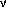

V,
V,
 C and
C and
 P
with the same sorts, define
Exp(V,C,P) as extending Exp(V,C) with:
P
with the same sorts, define
Exp(V,C,P) as extending Exp(V,C) with:
Given three signatures
V,
C and
P
with the same sorts, define
Exp(V,C,P) as extending Exp(V,C) with:
| M | ::= | ...as before... | |
| | | c M | (Process constructor, c in P) |
and add a new category:
| C | ::= | ...as before... |
| | | proc |
The judgements

 M : T
in central are as before, but we now have
three new rules, one for value constructors:
M : T
in central are as before, but we now have
three new rules, one for value constructors:
|
[c : B1,...,Bm  C1,...,Cn in V] C1,...,Cn in V]
| |||||||||
one for central constructors:
|
[c : B1,...,Bm C1,...,Cn in C]
| |||||||||
and one for process constructors:
|
[c : B1,...,Bm C1,...,Cn in P]
| |||||||||
Again, we have the soundness of the two subsumption rules, one for expressions:
|
|
M : T in central |
|
|
M : T in proc |
and one for declarations:
|
|
D :  in central in central |
|
|
D : in proc |
The graphical presentation of proc is rather different from that of central and val. If we were to use the `obvious' semantics, then we would discover that not all graph-isomorphic terms are equal. In particular, in central we have:
| let (h:string, w:string) = ('hello', 'world'); |
| print (h); |
| print (w); |
The values 'hello' and 'world' come from val, so order of evaluation is unimportant. The print nodes, however, come from proc, where order of evaluation is significant, so print has an incoming and outgoing control arc as well as its incoming data arc:
As another example, the ML reference functions can be typed (using only integer references for this example):
| ref | : | central (int) : ref |
| := | : | proc (ref,int) : () |
| ! | : | proc (ref) : int |
or graphically:
For example:
| let r:ref = ref(0); |
| r := (1 + !(r)); |
| return r; |
The semantics of proc terms is given as a graph with one incoming and one outgoing control edge:
| [[x in proc]] | = | |
| [[c M in proc]] | = | |
| [[c M in proc]] | = | |
| [[c M in proc]] | = | |
| [[() in proc]] | = | |
| [[(M,N) in proc]] | = | |
| [[D M in proc]] | = |
| [[let P = M; in proc]] | = | |
| [[D1 D2 in proc]] | = | |
| [[ in proc]] | = |
V,C,P)
of graphs with one control line, with:
V)
 Graph(V,C)
Graph(V,C,P)
Graph(V,C)
Graph(V,C,P)
and show that this is the initial triple of categories:
C
P
with:
V.
C.
P.
Such triples of categories have been studied by Power and Thielecke, and compared with indexed categories. The presentation here is slightly different, in that we have presented V and C a priori rather than synthesizing it from P. Since central constructors play an important role in languages such as the -calculus, it seems natural to include C in the categorical presentation. See Selinger's discussion in his presentation of control categories. Our presentation of premonoidal categories is based on Power's presentation using Subset-enriched categories.